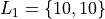
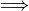
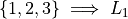

Basics#
Setup#
Statistics Diagnostics Mode#
Some output that will be useful in this class is suppressed by default. To ensure all relevant information is output, go to the MODE menu,
Scroll down to Stat Diagnostics. If necessary, switch Stat Diagnostics mode to on.
Initialize Lists#
Sometimes lists are deleted from the calculator’s memory (intentionally or otherwise) and will need restored. To do this, execute the following,
Lists#
A list variable is the TI-83/84 family’s way of representing sets.
Warning
Technically, mathematical sets do not allow for duplicated values. A list on your TI is an ordered set, meaning duplicate values are distinguished by the order in which they occur, i.e. the following list on a TI

has two elements, because each 10 also has an order associated with it. In pure set theory, both 10’s would be considered the same element.
Creating and Editing#
Spreadsheet#
The easiest way to edit lists through the Spreadsheet Editor. The Spreadsheet Editor can be accessed with the following command sequence,
TODO: insert some pictures
The first row of the list spreadsheet is a row of headers that identify which list corresponds to which column. Data can be entered directly into the lists by using the arrow keys and the ENTER button.
Store#
Alternatively, lists can be stored into list variables using the  button.
Entering this sequence of buttons will be shown on the main screen of the calculator as follows,

Delete#
ClrList#
TODO
ClrAllLists#
TODO
Operations#
TODO
dim#
TODO
Note
dim stands for dimension. In other words, it tells you the dimension of the list.
seq#
TODO
This will bring up the SEQ editor.
TODO
cumSum#
TODO
augment#
TODO
Math#
TODO
min#
TODO
max#
TODO
mean#
TODO
median#
TODO
sum#
TODO
stdDev#
TODO
Variables#
TODO
Data Variables#
TODO
Function Variables#
TODO
Functions#
TODO
Probability Functions#
TODO
rand#
TODO
nPr#
TODO
nCr#
TODO
!#
TODO
randInt#
TODO